OPERAÇÕES


1.8.1 para atualizar o FW selecione a flag do lado esquerdo do numero HWID da KDB, e no canto superior esquerdo clique em ações depois em atualizar FW, e finalize clicando em prosseguir.
1.8.2após finalização de todos os comandos a KDB irá reiniciar e começar a instalação do FW baixado, assim que for finalizada a instalação a KDB voltará a comunicar e o numero de FW será atualizado.